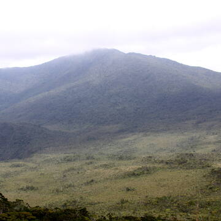
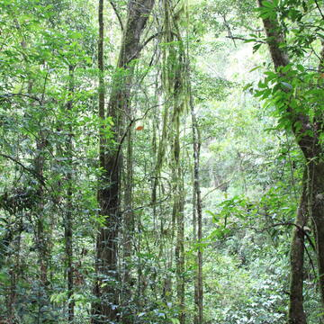
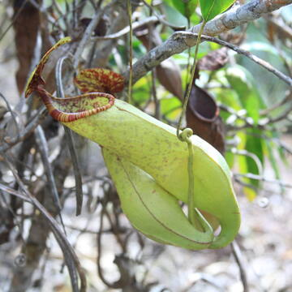
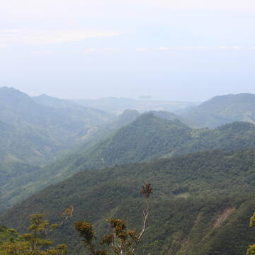
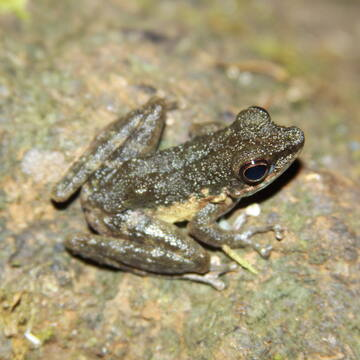

东南亚世界遗产墙报
汉密吉伊坦山野生动物保护区
一.汉密吉伊坦山野生动物保护区建立的背景
1 .丰富的生物多样性：汉密吉伊坦山位于菲律宾达沃区的东达沃省，
处于重要的生物地理区域，在东部棉兰老生物多样性走廊的东南部。其
海拔 75 至 1637 米，拥有从热带低地到高山生态系统的多种栖息地
类型，为种类繁多的动植物提供了天然的生存环境。保护区内有 1380
种动植物，其中 341 种是菲律宾特有的，两栖类和爬行类的特有率分
别高达 75% 和 84%。这里还是濒危的菲律宾鹰、菲律宾凤头鹦鹉等多
种珍稀物种的重要栖息地。

2.独特的生态系统：汉密吉伊坦山拥有完整或基本完整、高度多样化的
山地生态系统。不同海拔呈现出不同的陆地和水生栖息地，如低地的热
带雨林、中海拔的云雾林以及高海拔的矮性热带林等，还有独特的 “盆
景” 森林，这些生态系统在全球范围内具有独特性和代表性。

3.保护意识的提升：随着全球对生物多样性保护重视程度的提高，菲律
宾政府和相关保护组织意识到汉密吉伊坦山地区生态系统的重要性和脆
弱性，为了保护这些珍贵的自然资源和生态环境，使其免受人类活动的
破坏，如森林砍伐、非法捕猎、农业扩张等，在 2003 年将其设立为野
生动物保护区。2014 年，该保护区根据自然遗产遴选依据标准（x），
被联合国教科文组织世界遗产委员会批准作为自然遗产列入《世界遗产名
录》，进一步提升了其在全球保护领域的地位和知名度，也为保护区的保
护和管理提供了更多的国际支持和资源。
二.汉密吉伊坦山野生动物保护区的建立的重要意义
1.保护生物多样性 提供栖息地：为众多动植物提供了关键的生存空间。
保护区内从热带低地到高山的多种生态系统，如低地的热带雨林、中海拔
的云雾林、高海拔的矮性热带林等，为 1380 种动植物提供了栖息之所，
是濒危的菲律宾鹰、菲律宾凤头鹦鹉等珍稀物种的重要家园。
2.保护特有物种：保护区内菲律宾特有的动植物种类繁多，两栖类和爬行
类（例如树蛙）的特有率分别高达 75% 和 84%，还有 8 种是除了汉密吉伊坦山以外
在其他地方没有发现的，对于保护这些独特的物种资源具有不可替代的作用。

3.维护生态平衡 保持生态系统完整性：拥有完整或基本完整、高度多样化的山
地生态系统，不同海拔的陆地和水生栖息地相互关联、相互作用，共同维持着生
态系统的稳定和平衡，在全球生态系统中具有独特性和代表性。
促进物质循环和能量流动：保护区内丰富的生物种类和复杂的生态系统结构，使
得物质循环和能量流动得以顺畅进行，对维持区域生态环境稳定、调节气候、保持
水土等方面发挥着重要作用。

4.提供科研教育基地 科研价值：是研究各类生态系统自然过程基本规律、研究物
种生态特性的重要基地，为科学家研究生物进化、生态适应、物种间相互关系等提
供了天然的实验室，有助于深入了解生物多样性的形成和发展机制，以及生态系
统对环境变化的响应。

5.教育意义： 为公众提供了认识自然、了解生物多样性重要性的场所，通过开展
生态教育活动，能够提高公众的环保意识，培养人们对自然的尊重和保护意识，
促进可持续发展理念的传播和推广。

6.生态旅游：独特的自然景观和丰富的生物资源吸引了众多游客前来参观游览，
为当地带来了旅游收入，促进了交通、餐饮、住宿等相关产业的发展，创造了就业
机会，有助于提高当地居民的生活水平。
7.国际合作：作为世界自然遗产，汉密吉伊坦山野生动物保护区在国际上受到广
泛关注，为菲律宾与其他国家在生物多样性保护、科研合作、生态教育等方面提供
了交流与合作的平台，有助于提升菲律宾在国际环境保护领域的地位和影响力。
8.示范作用：其保护理念和管理经验可以为其他国家和地区提供借鉴和参考，为
全球生物多样性保护和生态环境保护事业做出贡献。
三.汉密吉伊坦山野生动物保护区的遗产内容
1.独特的生态系统：拥有完整或基本完整、高度多样化的山地生态系统，处于菲
律宾重要的生物地理区域。其顶部是脆弱的热带 “盆景” 森林，是大自然在恶劣
条件下生存的缩影。保护区内从低海拔的热带低地雨林到高海拔的矮性热带林等多
种生态系统类型，为各种动植物提供了适宜的生存环境。不同海拔呈现出不同的陆
地和水生栖息地，包括在 420 - 920 米海拔的龙脑香科森林生态系统，以大树
为特征，有 418 种植物和 146 种动物；在更高海拔的山地森林生态系统，有众
多苔藓、地衣和附生植物；还有典型的云雾林生态系统，以及在 1160 - 1200
米海拔的苔藓 - 矮性森林生态系统，是世界上猪笼草和德利亚斯蝴蝶的唯一已知
栖息地。

2.丰富的动植物资源：是众多动植物的家园，共有 1380 种动植物，其中 341 种
是菲律宾特有的。这里是极度濒危物种的避难所，如标志性的菲律宾鹰、菲律宾凤头
鹦鹉，还有濒危的多籽娑罗双树、无茎娑罗双树和马面兜兰等。保护区内两栖动物的
特有率高达 75%，爬行动物的特有率达 84%，还有 8 种是除了汉密吉伊坦山以外
在其他地方没有发现的物种。
